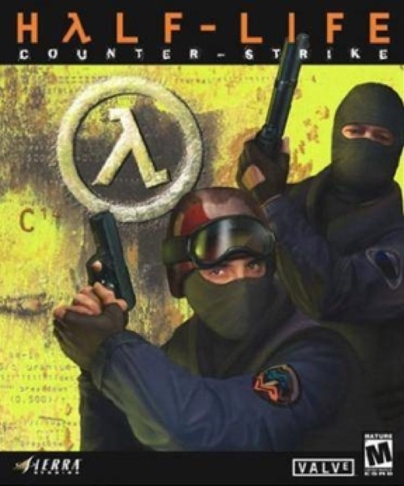

Shooter · 2000
Counter-Strike
A Half-Life mod that redefined competitive shooters for good.

Cover: Wikipedia: Counter-Strike (video game)
Facts
- Released
- 2000-11-14
- Genre
- Tactical FPS
- Category
- Shooter
- Platforms
- PC, Xbox
- Developers
- Valve Corporation
- Publishers
- Nexon, Sierra Entertainment, Valve Corporation
PC requirements
- Minimum
- [object Object]